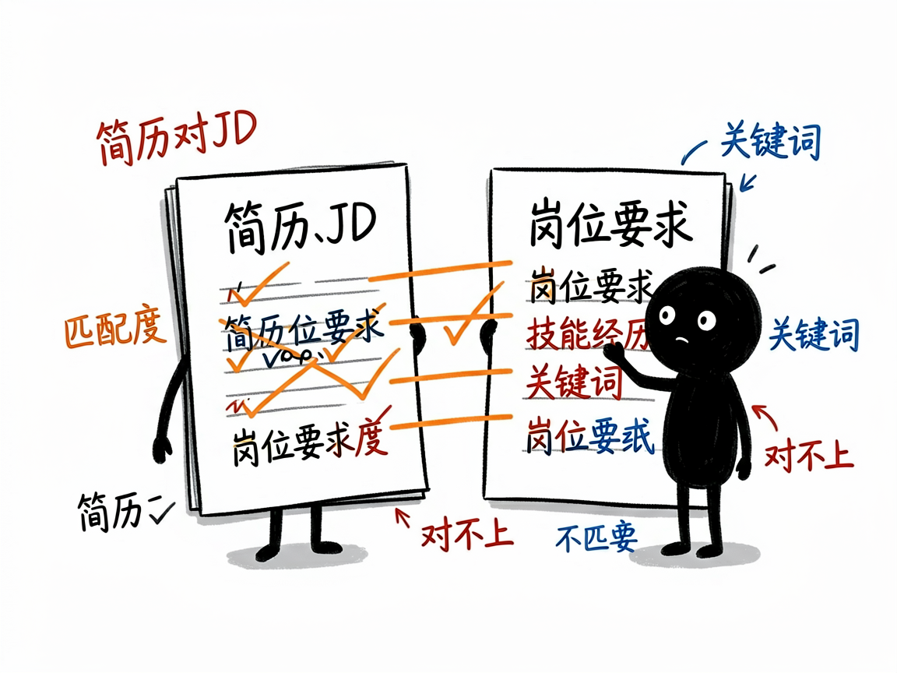

不知道简历行不行、跟岗位匹不匹配？它像一个严格的 HR 帮你挑刺重写 —— resume-matcher 介绍
你投了 N 份简历石沉大海，心里犯嘀咕：是我的简历写得不好，还是本来就不对口？自己看自己的简历，怎么看都还行；可你缺一个"招聘方视角"——到底哪里啰嗦、哪里没数据、哪里跟岗位要求对不上。
resume-matcher 就是来解决这件事的。
它用资深 HR（HRBP）+ 技术主管的视角，给你的简历做一次深度"挑刺"审计，并把它和目标岗位的招聘要求（JD）逐条比对匹配度，最后还帮你把简历改好、导出成能直接看的版本。你给它简历加岗位要求，它还你一份"问题清单 + 修改蓝图 + 优化后简历"。

它到底能做什么
- 解析简历 / JD：直接丢 PDF 或 Word 文件给它，也能粘贴纯文本，它会自动提取内容（注意加密的或图片扫描件读不了）。
- 结构化对比：把简历和岗位要求各自拆成"技能、经历、关键词"，让你一眼看清匹配和不匹配的地方。
- HRBP 五步审计：从"第一印象"到"地毯式挑刺"再到"修改蓝图"，像面试你的 HR 一样具体、有建设性地指出问题。
- 重写简历：不是只给建议，而是直接产出一版优化后的简历全文，量化指标处用占位符提醒你补数字。
- 可视化导出：内置一个中文简历编辑器（a4cv），把优化后的简历导进去就能排版、调样式、导出 PDF。

一个具体例子
# 从 PDF/DOCX 里抽出简历纯文本
python ".agents/skills/resume-matcher/scripts/extract-text.py" "我的简历.docx"
# 把审计产出的优化简历规范化，再启动可视化编辑器
python ".agents/skills/resume-matcher/scripts/normalize-markdown.py" \
--input 分析报告.md --output 优化简历.md
python ".agents/skills/resume-matcher/scripts/serve.py" --open
启动后浏览器打开 http://localhost:8765/a4cv/ 即可导入、排版、导出 PDF。
谁适合用
- 正在找工作、想提升简历通过率的求职者。
- 不确定自己的经历跟某岗位"对不对口"、想先看匹配度的人。
- 帮别人改简历、或做 AI 工具想内置简历分析能力的人。
一点说明 / 小提示
它是个"AI 技能"，最舒服的用法是在带它的 AI 助手对话框里发"帮我看看这份简历 + 这个岗位要求"，它来跑解析、做审计、给改稿。它靠 AI 推理做审计，不依赖外部大模型接口；图片扫描件、加密 PDF 提取不了文字，需要你给文本版。它给的是修改方向和一版草稿，最终投递前关键信息（数字、事实）还得你自己核实补齐。具体能力以项目文档为准。